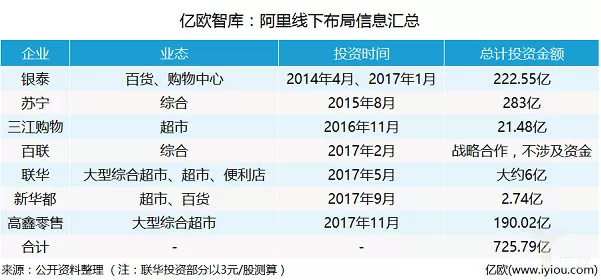
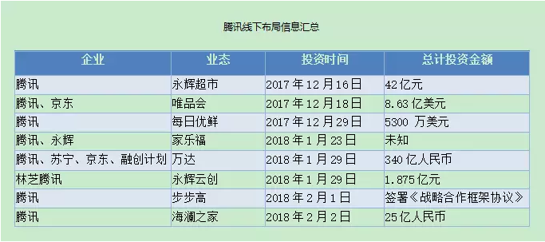
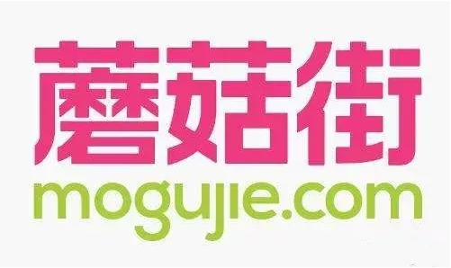
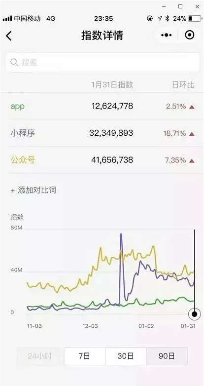
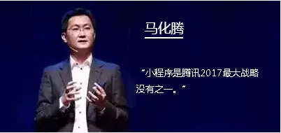
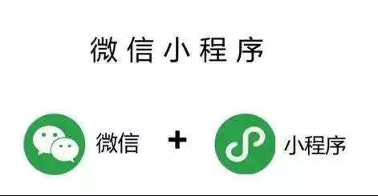
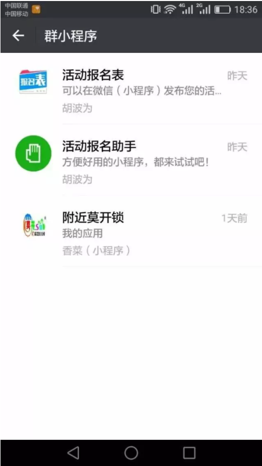

为什么2018一定要入场小程序，因为想做小程序的同行太多。
从1998年PC互联网到2008年移动互联网再到2016年物联网以及2017年的小程序、人工智能，我们发现技术进步的周期在日渐的缩短， 时代的变化在愈发的快捷 ， 而移动互联网的红利亦在日渐的消退，我们发现流量越来越贵了 ……
2017年是线下世界沸腾的一年，共享单车、共享汽车、无人超市、不断的有创业公司在入局线下，互联网的世界悄无声息的在发生着变革……

（图片来源自网络--阿里巴巴2017年线下布局汇总图）

（-腾讯2017年12月——2018年线下布局汇总图）
如果把移动互联网的APP定义为互联网的上半场，那么2017年1月9日小程序的出现将把互联网的世界带入下半场！
小程序本身自带流量属性，其中二维码、附近的店、微信搜索将是最大的流量入口，小程序本身是为线下商业服务的，因为它的属性就是作为线下商业连接线上的桥梁。
微信作为一个月活超过十亿的超级APP，小程序必然会取得巨大发展。当下，小程序正在革命性地降低移动应用生产力成本，只会不断向前走，不会再回到APP。这是不同的时代，就如现在我们不会回到PC时代，不会再从订阅号回到APP去获取内容是一样的道理，时代总是在往前走。
随着互联网两大巨头，腾讯和阿里纷纷进军小程序领域：
小程序的热度一直持续上升，对于数字化全面到来的提前布局，是每一个商户都需要考虑的。小程序就好比一张入场券，可以进入到微信流量共享圈，未来的趋势必将是每一个商户都至少拥有一个自己的小程序，区别在于：你是现在自己主动进入、主动抢客户，还是未来被动入局、被动防守。
2017年上半年，美丽联合集团（美丽说、蘑菇街）CEO陈琪面临一个关键决策：要不要进入线下？要不要渠道下沉？
陈琪想获得更多来自三四线以下的用户，但微信小程序让陈琪彻底放弃了进入线下的想法。2017年6月23日，加入了购买功能的“蘑菇街女装精选”小程序上线，在此后4个月，蘑菇街获得了9000多万用户，其中有相当大一部分是来自三四线以下的用户。
微信官方公布的数据显示，小程序的用户有19%来自三线城市，31%来自四线及以下城市，即来自三四线以下的用户超过了一半。“我要开多少店才能接触到这些用户啊！”陈琪表示。
蘑菇街投入超过1亿人民币做小程序，十二大原因告诉你小程序时代已来。

在过去一年里，像蘑菇街这样在短时间内获得千万级用户的案例比比皆是，小程序的第一批尝鲜者已迅速尝到甜头，收割了红利。
去年5月，首个刷屏小程序“匿名聊聊”诞生，短短五个小时打开次数达到惊人的40亿次；
10月，左右脑测试捧红了现象级小程序“实用心理测试大全”；
12月，一款“圣诞头像”的小程序凭借制作圣诞帽3天PV破7500万，累计用户近700万；
拼多多小程序上线半年就获得了上亿用户；
90后的小程序员创业者黄大发--包你答、包你拼、开口红、包你接·成语接龙、成语碰词、包你跑、手气最佳·运气王、包你翻·翻牌子、拼图乐……几乎每款小程序都曾火爆过朋友圈，日活最高可达到几百万；
2017年末微信小程序中的"跳一跳 " 游戏风靡了整个微信圈，带火了“用完即走”的小程序。随着麦当劳、耐克广告接连上线，“跳一跳”商业化之路开始运作。而以“跳一跳”为代表的小程序生态正逐渐被微信激活。
马化腾正式成为全球华人首富，Nike3天2千万投小程序跳一跳广告。

小程序：整合微信生态的连接器
在微信的组织架构中，小程序团队隶属于微信开放平台，这个平台旨在帮助各类合作伙伴使用微信的能力，包括使用微信账号注册登录、微信支付、微信分享等。在这样的架构下，小程序好比一个内部连接器，把微信开放的不同能力整合起来。
“公众号和小程序是不能对标的。”微信开放平台团队解释道，“公众号的产品能力是沉淀用户的，如果可以对标的话，应该把H5和小程序放在一起。” 微信开放平台基础部副总经理胡仁杰告诉《21CBR》记者，小程序加载的速度比H5快20%-30%，“小程序拥有微信原生的一些能力，我们可以赋予它更好的体验，更快的速度。H5不是基于微信基础开发出来的，所以在体验上有很大的区别。”
小程序：从克制到开放
小程序是一个针对线下场景设计的应用，微信在发布最初对准入门槛和导流都设置了限制，也没有开放明确的“入口”，开发者们都摸不着门路。被称为“现象级产品”的小程序在发布不久后便进入了沉寂期，上线短短一个月，从众望所归到普遍看衰，一时冰火两重天。
改变发生在去年3月27日，小程序一口气开放了6个新能力，包括面向个人开发者开放（降低门槛）、公众号和小程序新增三种连接方式（导流）、兼容线下二维码（增加入口）等。自此，克制的小程序进入了疯狂的开放模式。在12个月内，小程序发布了32次、100+能力开放，相当于一周半就更新一次。

不断地开放，让小程序“复活”
美丽联合是首批拿到小程序开发权限的200多家企业之一，最初就拿蘑菇街做了个粗糙的模型，选了一些比较好的内容放进去，权当小程序是个展示渠道。
去年4月，微信小程序进行了8次更新，开放了数十个新能力。这让美丽联合重视起来，用了23天重新打磨产品，成为微信小程序生态中第一个电商小程序。凭借着拼团、直播、立减金三大玩法，蘑菇街拉开了社会化电商的新模式。
回忆起过去一年的开放速度，胡仁杰说：“我们的部门叫开放平台基础部，我们工作在于开放，所以是把整条命都交给合作伙伴了。我们自己没有产品，只有让生态做起来，我们才有活的空间。”在陈琪看来，微信也是受益者。“微信一直是用户场景驱动的产品思维和逻辑，所以我们不断为它提供电商的用户场景，过去大半年蘑菇街拿自己当小白鼠，投入资源、时间和精力，把微信小程序电商这样一个场景推出来了。”陈琪透露，美丽联合在微信小程序上的投入超过了1亿元。
小程序本身没有粉丝留存，因此关键指标是留存率，也就是用户的回访率
2017年12月28日，微信对小程序进行了入口改版，有人称其为“历史性的跨越”——在首页增加了小程序任务栏，用户可以通过下拉的动作唤出任务栏，打开最近使用过的小程序，或者进行管理。有统计称，目前小程序的各类入口已累计超过50+。
张小龙对“入口”的说法很不以为然，这不符合微信作为“去中心化平台”的理念。他开了一个玩笑：唤出小程序任务栏后继续下拉，除了能看到顶部的小程序，在最底部可以看到一行小字，“这不是入口^_^”。
2017微信电商已过万亿，2018年必将全面爆发，实体商家必须知道这些。

小程序：连接万物
关于产品理念，张小龙有句名言：用完即走。其实还有后半句，“走了还会回来”。 “跳一跳”上线后，张小龙看到了一条让他特别开心的评价：跳一跳有毒，想把它给卸载了。“但卸载不掉它，因为也无需安装。”张小龙说。
小程序的克制可能是一个“误会”。张小龙对小程序很有耐心，甚至刻意让它先冷后热。经历了公众号时代的种种，张小龙感到害怕，“我们特别害怕提出一个新的概念，这个概念被炒得很火，有一堆人说这是风口，这是一个绝对不能错失的机会，想尽一切办法把它变成一种被透支的流量，然后它就挂掉了。”
张小龙不希望小程序“被催肥”，但肯定要“肥”起来。最关键的是，小程序的存在不仅为了把微信变成工具之王，或者革掉App的命，它的生命力在于线下，在于实体，或者说就在于所有真实的物。“我们为什么这么看好它？在我们看来，小程序代表了一种表达方式。未来万事万物可能都包含信息，所有的信息都需要用某一种方式被人触达，跟人沟通，小程序刚好是这样一种信息的组织方式，或者说是一个信息的载体。
线下的战争事关场景争夺，无论微信还是他背后的腾讯，都志在必得。这是不容错失的，属于线下实体行业的流量盛宴。小程序接下来的重点战略有两个方面，一个是线下新零售，一个是电商。而在此之前，二者都被看做是微信能力相对薄弱的环节。
不过电商生态的成长核心终归是流量游戏，这一点微信驾轻就熟。对于微信来说，线下才是真正难啃的硬骨头。所以此前在微信公开课上露面的爱鲜蜂、万达等公司都成为了小程序想要主动推出的优秀案例。为了让这些案例能够尽快落地，微信团队一般都会很深层面的介入这些公司的小程序开发。

小程序一年的营销思路汇总：
a： 让精准用户知道我们的小程序？
1、移动互联网依靠流量的时代在渐消，精准营销应该引起每一位运营营销人员的关注，运营之前需要对自身业务适用用户进行用户画像描述。
2、门店类：小程序二维码以创意设计的方式将用户眼球吸引过来；门店活动，形式不等；对于用户生活必须类的还可以以优惠方式将用户圈进自己的微信群，后续属于社群运营暂不做展开。
3、微信群、好友精准转发，最好分享小程序页面，不要直接分享小程序。理由好比，我分享一篇有价值的订阅号内容建议你关注和直接给你分享微信订阅号名片让你关注一样的道理。本地类小程序瞄准当地群，本地类小程序应用分享到全国类或不定地区类群里意义不大，当然你有资源可以尽情。
b：如何避免用户玩完就走
1、用户第一次触达小程序的不是上图的列表页，而是首页。小程序的首页要简洁明了，直接了当的让用户接触核心业务功能，解决他的某方面需求。
2、小程序列表直观看，小程序图标和小程序名称。图标有创意，名称简短精炼一个词说明该应用是干什么的。
3、不做过轻型工具。比如，有开发者在做日历，时钟、计算器是不可取的，或许可以将轻型工具商业化。女性生理是依赖于日历的，如果为女性定制一个自己的生理周期标注，以及不同的生理期间提供不的生活建议会不会更好呢？
如何让用户形成裂变
1、优惠活动吸引已有用户邀请新用户。
2、重点—线上线下服务：线上提供客服功能【小程序API已经提供】，及时有效回复用户消息，解决用户需求；线下服务员贴心指导或小程序二维码摆放使用流程指导图。
3、重点—优质产品：再好的服务也是依赖于自身产品。如何打磨优质产品不做详解，体验流畅优势？美味可口优势？使用效果优势？价格优势？
4、优质产品+线上线下服务促成口碑，用户水到渠成。
微信有了近10亿用户，这是连接人的部分；而通过小程序，微信可以连接物。未来，小程序会成为万物互联的一个协议吗？微信会成为连接万物的入口吗？想象空间一下子被拉得更大了。微信小程序对大中小各类商家都是公平的，十亿微信用户就是一个巨大的流量池子，只是在于不同的运营玩法。2018大部分商户都会意识到小程序的重要性，这时候入场是殊为明智的。
劲爆！小程序成功进驻朋友圈啦！国内电商行业进入微信互联网时代。
为什么坚定看好微信
正如张小龙所传递的微信的价值观——微信只有对错的选择，而没有利益最大化的抉择；微信要与用户建立平等的关系，把他们当朋友。在他看来，微信一直很克制，虽然经常更新但变化不大。因为利益的堆砌会失去产品最本质的东西。做好这样的产品，需要专业的能力、判断。除此之外，微信更需要尊重用户、尊重个人。在keso眼里，微信就是一个固执的小孩。“可以轻松做到的很多事情，不做，可以轻松拿走的很多利益，不拿。”
总之，微信小程序的进化还在继续，也愿它出走半生，归来仍是少年！
关于小程序开发，运营，代理，可加作者微信私聊